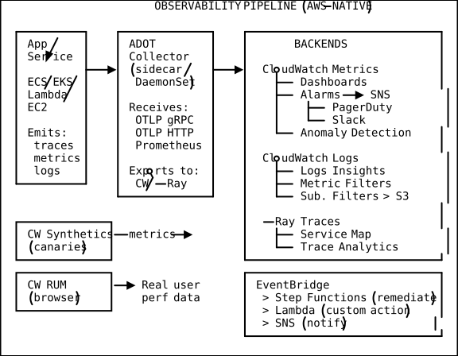
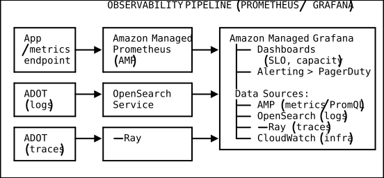

Cloud Observability Architecture
Table of Contents
- Introduction
- Three Pillars of Observability
- CloudWatch Deep Dive
- EventBridge for Operational Events
- AWS Systems Manager
- Health and Status
- OpenTelemetry Integration
- Observability Pipeline Architecture
- Best Practices and Anti-Patterns
- Practical Takeaways
1. Introduction
Monitoring vs. Observability
Monitoring tells you when something is broken. You predefine checks, set thresholds, and fire alerts. It answers known-unknowns: “Is CPU above 90%?”
Observability tells you why something is broken, even when you could not have predicted the failure mode. It answers unknown-unknowns: “Why did latency spike for users in eu-west-1 between 14:02 and 14:07?” Observability is the property of a system that lets you ask arbitrary questions about internal state by examining external outputs — metrics, logs, and traces.
This matters in distributed systems because a single request may traverse 8-15 services, failure is rarely binary (a system can be “up” yet degraded), and root causes are emergent — a memory leak in Service A creates back-pressure on Service B, triggering retries in Service C that saturate a connection pool in Service D.
| Challenge | How Observability Helps |
|---|---|
| Ephemeral infrastructure | Telemetry must outlive containers and Lambdas |
| Polyglot services | Unified correlation across languages and runtimes |
| Blast radius estimation | Traces show exactly which downstream services affected |
| Compliance and audit | Immutable log streams with retention policies |
| Incident response | Dashboards + alarms + runbooks reduce MTTR |
2. Three Pillars of Observability
2.1 Metrics
Metrics are numeric measurements collected at regular intervals — cheap to store, fast to query, ideal for dashboards and alarms.
CloudWatch Metrics are identified by namespace (AWS/EC2, AWS/Lambda, or custom
MyApp/PaymentService), metric name (CPUUtilization, Duration), and dimensions
(name-value pairs like FunctionName=processOrder).
Statistics and periods — when retrieving data you choose an aggregation window (period)
and statistic: Average, Sum, Min, Max, SampleCount, or extended statistics like
p50/p90/p99. Standard resolution: minimum 60s period. High-resolution metrics:
down to 1-second periods, higher cost.
# Publish a high-resolution custom metric
aws cloudwatch put-metric-data \
--namespace "MyApp/PaymentService" \
--metric-name "PaymentLatency" \
--value 142.7 --unit Milliseconds \
--storage-resolution 1 \
--dimensions Environment=prod,Region=us-east-1Embedded Metric Format (EMF) — from Lambda, emit custom metrics via structured log output with zero API call overhead:
{
"_aws": {
"Timestamp": 1715300000000,
"CloudWatchMetrics": [{
"Namespace": "MyApp/OrderService",
"Dimensions": [["Environment", "OrderType"]],
"Metrics": [
{ "Name": "OrdersProcessed", "Unit": "Count" },
{ "Name": "ProcessingTime", "Unit": "Milliseconds" }
]
}]
},
"Environment": "prod", "OrderType": "subscription",
"OrdersProcessed": 47, "ProcessingTime": 230
}Metric Math combines metrics into derived calculations directly in CloudWatch:
| Pattern | Expression |
|---|---|
| Error rate | (errors / total) * 100 |
| Requests/sec | requestCount / PERIOD(m1) |
| Anomaly band | ANOMALY_DETECTION_BAND(m1, 2) |
| Rate of change | RATE(m1) |
Anomaly Detection builds an ML model of expected behavior and alerts on deviations. Takes ~2 weeks to establish a reliable baseline. Accounts for hourly, daily, and weekly seasonality.
2.2 Logs
Logs are immutable timestamped records — richest context, most expensive to store and query.
CloudWatch Logs structure: Log Group (container, sets retention) > Log Stream (one per source) > Log Event (individual line). Retention set at group level: 1 day to 10 years, or never expire (default).
aws logs put-retention-policy \
--log-group-name "/aws/lambda/processOrder" --retention-in-days 30CloudWatch Logs Insights — purpose-built query language for fast log analysis:
# Find errors
fields @timestamp, @message | filter @message like /ERROR/
| sort @timestamp desc | limit 50
# Error count over time
filter @message like /ERROR/
| stats count(*) as errorCount by bin(30m) | sort @timestamp
# Parse JSON and compute percentiles
parse @message '{"level":"*","requestId":"*","duration":*}' as level, reqId, duration
| filter level = "ERROR"
| stats avg(duration), pct(duration, 99) as p99 by bin(5m)
# Slowest Lambda invocations
filter @type = "REPORT"
| stats max(@duration) as maxDur, pct(@duration, 99) as p99 by bin(1h)
Metric Filters turn log patterns into CloudWatch metrics:
aws logs put-metric-filter \
--log-group-name "/aws/lambda/processOrder" \
--filter-name "ErrorCount" --filter-pattern '{ $.level = "ERROR" }' \
--metric-transformations metricName=LambdaErrorCount,metricNamespace=MyApp/Logs,metricValue=1,defaultValue=0Subscription Filters stream logs in real-time to Kinesis Firehose (S3 archive), Lambda (processing), OpenSearch (search), or Kinesis Data Streams (fan-out).
Cross-Account Log Aggregation — source accounts write via subscription filters to a central account’s destination, controlled by resource policies:
{
"Version": "2012-10-17",
"Statement": [{
"Effect": "Allow",
"Principal": { "AWS": ["111111111111", "222222222222"] },
"Action": "logs:PutSubscriptionFilter",
"Resource": "arn:aws:logs:us-east-1:333333333333:destination:centralDest"
}]
}2.3 Traces
Traces follow a single request through a distributed system, answering questions neither metrics nor logs can: “Which service in the chain caused the 2-second spike?”
AWS X-Ray concepts:
- Trace — full end-to-end journey, unique trace ID
- Segment — work by one service (timing, HTTP data, fault/error flags)
- Subsegment — finer-grained work (a DynamoDB call, a function)
- Annotations — indexed key-value pairs for filtering (customer ID, order type)
- Metadata — non-indexed data for debug payloads
from aws_xray_sdk.core import xray_recorder
subsegment = xray_recorder.begin_subsegment('payment-processing')
subsegment.put_annotation('customer_tier', 'premium') # indexed
subsegment.put_metadata('request_body', request_body) # not indexedService Map — X-Ray auto-builds a visual graph showing average latency, request rate, and error rates (color-coded) per node.
Sampling Rules control cost. Trace everything for high-value transactions and errors, sample 1-5% for normal traffic, 0% for health checks.
| Traffic Type | Fixed Rate | Rationale |
|---|---|---|
| Health checks | 0.0 | No value |
| High-value txns | 1.0 | Trace every one |
| Normal API | 0.05 | 5% sample |
| Error responses | 1.0 | Always trace errors |
Latency debugging workflow: alarm fires > filter X-Ray traces by URL + response time > examine trace timeline > check annotations > compare fast vs. slow traces > correlate with logs using the trace ID.
3. CloudWatch Deep Dive
3.1 Alarms
Alarms evaluate metrics and transition between OK, ALARM, and INSUFFICIENT_DATA.
# Threshold alarm: CPU > 80% for 3 consecutive 5-min periods
aws cloudwatch put-metric-alarm \
--alarm-name "HighCPU-WebServer" \
--metric-name CPUUtilization --namespace AWS/EC2 --statistic Average \
--period 300 --threshold 80 --comparison-operator GreaterThanThreshold \
--evaluation-periods 3 --datapoints-to-alarm 3 \
--dimensions Name=InstanceId,Value=i-0abc123def \
--alarm-actions "arn:aws:sns:us-east-1:123456789012:ops-alerts" \
--treat-missing-data notBreachingAnomaly detection alarms use ANOMALY_DETECTION_BAND(metric, stddev) instead of fixed
thresholds. Composite alarms combine multiple alarms with boolean logic to prevent alert
storms:
aws cloudwatch put-composite-alarm \
--alarm-name "ServiceDegraded-OrderSystem" \
--alarm-rule 'ALARM("HighLatency-OrderAPI") AND
(ALARM("HighErrorRate") OR ALARM("DynamoDB-Throttled"))'Alarm actions: SNS notification, Auto Scaling policy, EC2 actions (stop/terminate/ reboot/recover), Systems Manager runbook, Lambda (via SNS).
3.2 Dashboards
Widget types: line, stacked area, number, gauge, bar, pie, text (markdown), embedded log query, alarm status, metric explorer. Dashboards support cross-account and cross-region display via CloudWatch OAM (Observability Access Manager) links.
3.3 Synthetics
Canaries are scheduled scripts that monitor endpoints before real users are affected. They produce success/failure metrics, HAR files, screenshots, and logs.
3.4 RUM (Real User Monitoring)
Captures browser telemetry: page load time, JS errors, HTTP errors, Core Web Vitals (LCP,
FID, CLS). With enableXRay: true, frontend traces connect to backend X-Ray traces for
full end-to-end visibility from click to database.
3.5 Application Insights
Auto-discovers application components and configures monitoring for common stacks (.NET, SQL Server, Java). Groups related anomalies into “problems” with root cause narratives.
4. EventBridge for Operational Events
EventBridge routes events from AWS services, SaaS apps, and custom sources to action
targets: Event Source > Event Bus > Rule (pattern match) > Target.
// Auto-remediate: detect GuardDuty high-severity finding
{
"source": ["aws.guardduty"],
"detail-type": ["GuardDuty Finding"],
"detail": { "severity": [{ "numeric": [">=", 7] }] }
}Schema Registry auto-infers event schemas, enables code binding generation (TypeScript, Python, Java), and tracks schema versions.
Operational workflow pattern:
AWS Event (e.g., RDS failover)
> EventBridge Rule
> SNS (alert team)
> Step Functions (orchestrate remediation)
> CloudWatch Logs (audit trail)
5. AWS Systems Manager
5.1 Parameter Store
Hierarchical store for config and secrets. Standard tier: 10K params, 4 KB, free. Advanced: 100K+, 8 KB, $0.05/param/month. SecureString encrypts with KMS.
aws ssm put-parameter --name "/myapp/prod/db/password" \
--value "s3cureP@ss" --type SecureString --key-id "alias/myapp-key"
aws ssm get-parameters-by-path --path "/myapp/prod/" --recursive --with-decryption5.2 Session Manager
Interactive shell access without SSH keys, open ports, or bastion hosts. All sessions logged to CloudWatch/S3. Supports port forwarding to private resources (e.g., RDS).
5.3 Patch Manager
Automates OS patching. Define patch baselines (which patches to approve by severity/ classification), schedule via maintenance windows (e.g., Sunday 02:00 UTC, 4-hour duration, 20% concurrency).
5.4 Run Command
Execute commands on managed instances at scale without SSH:
aws ssm send-command --document-name "AWS-RunShellScript" \
--targets '[{"Key":"tag:Role","Values":["web-server"]}]' \
--parameters '{"commands":["systemctl status nginx","df -h"]}' \
--max-concurrency "25%" --max-errors "5"5.5 Automation Runbooks
Multi-step workflows triggered by alarms, EventBridge, or schedules. Example: stop service
wait > start service > validate health > escalate to human if validation fails.
6. Health and Status
6.1 AWS Health Dashboard
Service Health — public status of all AWS services. Personal Health — events affecting your resources. Integrates with EventBridge for automated response to instance retirements, certificate expirations, etc.
6.2 Trusted Advisor
Inspects your environment across five categories: cost optimization, performance, security, fault tolerance, service limits. Full checks require Business/Enterprise support plan.
6.3 Cost Explorer and Cost Observability
Cost is a first-class observability signal. Unexpected changes often indicate misconfigurations or security incidents.
Cost Allocation Tags — activate tags (Project, Team, Environment) for cost attribution. Cost Anomaly Detection — ML-based unusual spending alerts. AWS Budgets — threshold alerts with actual and forecasted spending notifications:
aws budgets create-budget --account-id 123456789012 --budget '{
"BudgetName": "MonthlyProd", "BudgetLimit": {"Amount":"5000","Unit":"USD"},
"TimeUnit": "MONTHLY", "BudgetType": "COST"
}' --notifications-with-subscribers '[{
"Notification": {"NotificationType":"ACTUAL","ComparisonOperator":"GREATER_THAN",
"Threshold":80,"ThresholdType":"PERCENTAGE"},
"Subscribers": [{"SubscriptionType":"EMAIL","Address":"finops@example.com"}]
}]'7. OpenTelemetry Integration
OpenTelemetry (OTEL) is the CNCF standard for vendor-neutral telemetry. Using it protects against lock-in — switch backends without re-instrumenting code.
ADOT (AWS Distro for OpenTelemetry) includes AWS-specific exporters: Receivers (OTLP, Prometheus) > Processors (batch, filter, attributes) > Exporters (CloudWatch Metrics, CloudWatch Logs, X-Ray).
# otel-collector-config.yaml
receivers:
otlp:
protocols:
grpc: { endpoint: "0.0.0.0:4317" }
http: { endpoint: "0.0.0.0:4318" }
processors:
batch: { timeout: 10s, send_batch_size: 1024 }
resource:
attributes:
- { key: environment, value: "production", action: upsert }
exporters:
awsxray: { region: "us-east-1" }
awsemf: { region: "us-east-1", namespace: "MyApp/OrderService" }
awscloudwatchlogs: { region: "us-east-1", log_group_name: "/app/order-service" }
service:
pipelines:
traces: { receivers: [otlp], processors: [batch, resource], exporters: [awsxray] }
metrics: { receivers: [otlp], processors: [batch], exporters: [awsemf] }
logs: { receivers: [otlp], processors: [batch], exporters: [awscloudwatchlogs] }Application instrumentation (Python):
from opentelemetry import trace
tracer = trace.get_tracer("order-service")
@tracer.start_as_current_span("process_order")
def process_order(order_id: str):
span = trace.get_current_span()
span.set_attribute("order.id", order_id)
with tracer.start_as_current_span("validate_payment"):
validate_payment(order_id)Deployment: ECS sidecar (ADOT container alongside app container) or EKS DaemonSet (one
collector per node). Applications send to localhost:4317.
8. Observability Pipeline Architecture
Primary Pipeline (AWS-Native)

Alternative Pipeline (Prometheus + Grafana)

Choosing Between Pipelines
| Criterion | AWS-Native (CloudWatch) | Prometheus/Grafana (AMP/AMG) |
|---|---|---|
| Setup complexity | Low (built-in) | Medium |
| Query language | Logs Insights, Metric Math | PromQL (industry standard) |
| Dashboard quality | Functional | Excellent (Grafana) |
| Multi-cloud | AWS only | Any cloud, hybrid |
| Vendor lock-in | High | Low (OTEL + Prometheus) |
| Best for | AWS-centric, small teams | Platform teams, k8s, multi-cloud |
9. Best Practices and Anti-Patterns
9.1 Structured Logging
{
"timestamp": "2026-05-10T14:02:33.456Z",
"level": "ERROR",
"service": "order-service",
"traceId": "1-581cf771-a006649127e371903a2de979",
"correlationId": "req-abc-123-def",
"userId": "usr_789",
"action": "processOrder",
"orderId": "ord_12345",
"error": { "type": "PaymentDeclinedException", "message": "Card declined" }
}Structured JSON logs are queryable (Logs Insights filters on any field), indexable (metric filters extract values), correlatable (trace IDs link pillars), and machine-readable.
9.2 Correlation IDs
Generate a unique ID at the edge, propagate through every service. During incidents, one query retrieves the full request journey:
fields @timestamp, @message, service
| filter correlationId = "req-abc-123-def" | sort @timestamp asc
9.3 Log Levels
| Level | When to Use | Alert? |
|---|---|---|
DEBUG | Diagnostic detail (disabled in prod) | No |
INFO | Normal operations | No |
WARN | Degraded but functioning | No |
ERROR | Request failed, service continues | Maybe |
FATAL | Service cannot continue | Yes |
9.4 Alert Fatigue Avoidance
Anti-patterns: alerting on every 4xx, alerting on single data points, having 200 alarms where 180 are perpetually in ALARM, no runbook attached.
Best practices:
- Alert on symptoms, not causes. “Error rate > 1% for 5 min” not “CPU > 80%.”
- Use composite alarms. One incident = one alert, not ten.
- Require a runbook for every alarm. No runbook = you don’t understand the failure.
- Use M-of-N evaluation. 3 of 5 periods must breach. Filters transient spikes.
- Classify severity: P1 = wake someone, P2 = fix this shift, P3 = fix this week.
- Review quarterly. Delete alarms that never fire or always fire.
9.5 SLI / SLO / SLA
| Concept | Definition |
|---|---|
| SLI | A metric measuring service behavior (latency, error rate, throughput) |
| SLO | A target for an SLI (“p99 latency < 500ms”, “availability > 99.9%“) |
| SLA | Contractual commitment with consequences if SLO is not met |
Error budgets — the inverse of your SLO. At 99.9% availability, your error budget is ~43 minutes of downtime per month. Track budget consumption: alert at 50% (warning), 80% (action), 100% (freeze features, fix reliability).
SLO Target: 99.9% availability
Budget Used: ██████░░░░░░░░░░ 60%
Budget Remaining: 17 minutes of downtime
Burn Rate: 1.2x (sustainable < 1.0x)
10. Practical Takeaways
Key Principles
- Instrument first, optimize later. Deploy observability from day one, not after the first outage.
- Correlate across pillars. Metrics say something is wrong. Logs say what. Traces say where. Use all three via shared trace/correlation IDs.
- Design for queryability. Structured logs, meaningful dimensions, trace annotations.
- Separate signals from noise. Not every metric needs an alarm. Not every alarm pages.
- Treat observability as a product. Dashboards are UIs. Alarms are features.
- Embrace OpenTelemetry. Instrument with OTEL even if you use CloudWatch today.
Common Mistakes
| Mistake | Fix |
|---|---|
| No log retention policy | Set 30-90 days for most groups |
| Default 5-min metric period | Use 1-min or high-res for critical SLIs |
| Alerting on individual instances | Alert on aggregate (ALB/ASG-level) |
| No structured logging | JSON logging from the start |
| Missing correlation IDs | Generate at edge, propagate everywhere |
| Dashboards without context | Add text widgets with thresholds and links |
| Ignoring cost signals | Enable Cost Anomaly Detection and budgets |
| Vendor-specific SDKs only | Use OTEL SDKs, export to CloudWatch/X-Ray |
Cost-Conscious Observability
| Cost Driver | Strategy |
|---|---|
| Log ingestion | Filter noisy logs at source, set retention |
| Custom metrics | Use EMF (free ingestion), batch API calls |
| High-resolution metrics | Only for latency-critical SLIs |
| X-Ray sampling | 1-5% normal, 100% errors |
| Prometheus cardinality | Avoid high-cardinality labels (user IDs) |
| Log archival | Tier to S3 via subscription filters |
Rule of thumb: budget 5-10% of cloud spend on observability. Less = flying blind. More = audit cardinality and log verbosity.
Observability Maturity Model
| Level | Name | Characteristics |
|---|---|---|
| 0 | Reactive | No monitoring. Learn about issues from customers. |
| 1 | Basic | Default CloudWatch metrics. Manual log inspection. |
| 2 | Proactive | Custom metrics, structured logs, basic alarms. |
| 3 | Correlation | Distributed tracing, correlation IDs, composite alarms. |
| 4 | Data-Driven | SLOs, error budgets, automated remediation. |
| 5 | Predictive | Anomaly detection, capacity forecasting, chaos engineering. |
Most teams should target Level 3-4. Level 5 requires dedicated platform/SRE teams.
Quick Reference: Which AWS Service for What
| Need | Service |
|---|---|
| Infrastructure metrics | CloudWatch Metrics |
| Application logs | CloudWatch Logs |
| Log analysis | CloudWatch Logs Insights |
| Distributed tracing | AWS X-Ray |
| Synthetic monitoring | CloudWatch Synthetics |
| Real user monitoring | CloudWatch RUM |
| Alerting | CloudWatch Alarms + SNS |
| Event-driven automation | EventBridge |
| Config and secrets | Systems Manager Parameter Store |
| Remote access (no SSH) | Systems Manager Session Manager |
| OS patching | Systems Manager Patch Manager |
| Automated remediation | Systems Manager Automation |
| Cost monitoring | Cost Explorer + AWS Budgets |
| Vendor-neutral instrumentation | ADOT (AWS Distro for OpenTelemetry) |
| Managed Prometheus | Amazon Managed Service for Prometheus |
| Managed Grafana | Amazon Managed Grafana |
| Service health events | AWS Health + EventBridge |
| Best-practice checks | AWS Trusted Advisor |
DSA Connections
Sliding Window — CloudWatch Metric Periods and Alarm Evaluation
A sliding window is a technique that maintains a fixed-size window over a data stream, updating aggregate statistics in O(1) as new elements enter and old elements exit. CloudWatch alarms evaluate metrics using a sliding window: when you configure an alarm with period: 300 (5 minutes) and evaluation-periods: 3, CloudWatch maintains a sliding window of three 5-minute data points and evaluates the threshold condition against each window position. The M-of-N datapoints-to-alarm feature (e.g., “3 of 5 periods must breach”) is a generalization where the window has N slots and at least M must satisfy the condition. This is the same algorithm used in network congestion detection (sliding window over packet loss rates) and rate limiting (sliding window log or counter). Anomaly detection extends this by building an ML model over a much larger window (2+ weeks of historical data) and comparing the current window against the predicted band, effectively implementing a two-level sliding window: a short window for the current value and a long window for the expected baseline.
Reservoir Sampling — X-Ray Trace Sampling Rules
Reservoir sampling is an algorithm that selects k items uniformly at random from a stream of unknown length n, using O(k) memory. When X-Ray samples traces at a 5% rate from normal API traffic, it implements a variant of reservoir sampling: for each incoming request, a random number is generated and compared against the sampling rate threshold (0.05), and only matching requests are fully traced. The fixed-rate sampling in the document’s sampling rules table (0% for health checks, 5% for normal API, 100% for errors) is a stratified sampling scheme where different traffic types have different reservoir sizes. This ensures that the trace storage budget (the “reservoir”) is allocated to the most valuable traces rather than being overwhelmed by high-volume, low-value traffic like health checks. The practical benefit is that you can analyze latency distributions and error patterns from the sampled traces with statistical confidence, without paying to trace every single request — exactly as reservoir sampling provides a representative sample without storing the entire stream.
Bloom Filters — CloudWatch Logs Metric Filters and Pattern Matching
A Bloom filter is a probabilistic data structure that uses multiple hash functions to test set membership in O(k) time with no false negatives. CloudWatch Metric Filters process log streams at high throughput by applying pattern matching to every log event — when you define a filter pattern like { $.level = "ERROR" }, the filter engine must evaluate this condition against millions of log events per second. Internally, the filter engine uses indexed data structures similar to Bloom filters to quickly eliminate non-matching events: the structured JSON fields are hashed and tested against a compact representation of the filter pattern before performing full pattern evaluation. This two-phase approach (fast probabilistic check, then exact verification) enables CloudWatch to support subscription filters and metric filters on high-throughput log groups (like those from a fleet of Lambda functions) without introducing backpressure on the log ingestion pipeline. The same principle applies to EventBridge content-based filtering, which must evaluate complex event patterns against high-volume event streams in real time.
Time-Series Compression (Delta-of-Delta Encoding) — CloudWatch Metrics Storage
Time-series databases use delta-of-delta encoding to compress metric data: instead of storing absolute timestamps and values, they store the difference between consecutive differences, exploiting the fact that metrics are typically sampled at regular intervals with gradually changing values. CloudWatch Metrics stores billions of data points across millions of metric streams, and achieving this scale requires aggressive compression. When you publish a metric at 60-second intervals, the timestamps increment by a constant 60, so the delta is 60 and the delta-of-delta is 0 — compressible to nearly zero bits. Similarly, a CPU utilization metric hovering around 45% produces small deltas that compress efficiently. This is the same encoding used by Gorilla (Facebook’s in-memory time-series database) and Prometheus’s TSDB. Understanding this compression explains CloudWatch’s pricing model: high-resolution metrics (1-second periods) cost more not just because of increased volume, but because shorter intervals produce less predictable deltas, reducing compression ratios and consuming more storage per data point.
The patterns here — structured logging, correlation IDs, SLOs, error budgets, OTEL instrumentation — are transferable to any cloud provider. Master the concepts and the specific service names become interchangeable.